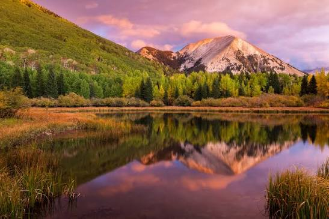
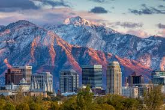

Utah is one of the most unique states in the United States because of its beautiful scenery, culture, history, and the different activities it has to offer. There are so many things that make Utah stand out from other states. From the mountains to the deserts, Utah has some of the most amazing views. I think one of the coolest things about Utah is how you can experience so many different types of landscapes without having to leave the state. One of the main things Utah is known for is its five national parks, which include Zion, Bryce Canyon, Arches, Canyonlands, and Capitol Reef. These parks are filled with amazing rock formations, red cliffs, and beautiful hiking trails. Utah is also known for its mountains and ski resorts, which make it a popular place for skiing and snowboarding during the winter. I think it is really cool how Utah has something to offer during every season. In the summer, people can go hiking, camping, and swimming, while in the winter, they can enjoy the snow and colder weather. Utah is also unique because of its culture and history. The state has a strong connection to the Mormon religion, which has had a big impact on its traditions and communities. Salt Lake City is especially important because it is the headquarters of the Church of Jesus Christ of Latter-day Saints. Utah also has a lot of Native American history, which is an important part of its identity. Another thing I think makes Utah special is the lifestyle. There are so many opportunities to spend time outside and enjoy nature. A lot of people in Utah enjoy outdoor activities, and the state has a strong sense of community. Overall, I think Utah is a really unique state because of its scenery, history, and lifestyle. There are so many things to see and do, and the landscapes are unlike anywhere else. Utah is a beautiful place to live and visit, and I think that is what makes it stand out from other states.

Visit Utah State University to learn more about education and opportunities in Utah.
© 2026 Exploring Utah